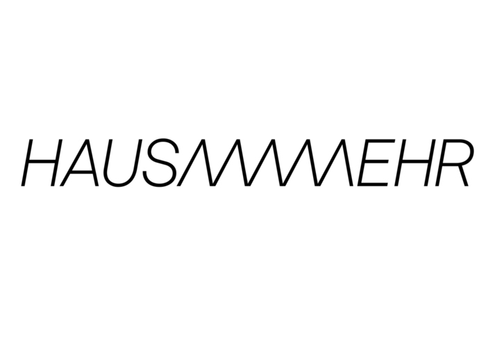

#shareyourcosmos
COVID-19 has affected us all, COVID-19 will change the lives of all of us. The creative collective HAUSAMMEHR would like to document these historical times together with you. Share your impressions, your fears, worries, but also joys. Share your thoughts, feelings and ideas. Share your newly created "micro" cosmos. Whether through video, audio, text, drawings or photography, #shareyourcosmos. HAUSAMMEHR has set itself the task of producing a socially relevant documentary film and an unprecedented art installation that could hardly be more real. The aim is to artistically process authentic recordings, to preserve and to strengthen the awareness of this historical moment for all future generations. Let us share this time together, even if we are spatially apart. Let the future know how we have felt and lived. Let us make art and history together! #shareyourcosmos
You can contribute by uploading any kind of content from your everyday life in video, audio, image or text format. By uploading hereby you agree with the terms and conditions from #shareyourcosmos. Please read these carefully through the following link before uploading it to our crowd-cloud.
Terms
wir@hausammehr.ch
We believe that social data is a public and common good. Through the last decades, this kind of data has been highly monopolized and we are all responsible for that. #shareyourcosmos is a crowd-repository maintained by HAUSAMMEHR which has the intention to document our everyday lives during this historical period and to keep it accessible to everyone for (social, anthropological, historical...) research and art practices. If you wish to get free access to the repository, to see how others go through these days and to start your research or art project with this data, please contact Andrés or Chris.
x
Terms and conditions for #shareyourcosmos
English: I agree to a publication of the recordings I have submitted as part of #shareyourcosmos.
Furthermore I declare:
I have participated in the production as one of the numerous performers and confirm that the content and purpose of the production have been explained to me.
I allow HAUSAMMEHR the unrestricted use and publication of the recordings for all media. I transfer to HAUSAMMEHR all copyrights and performer's rights created by me in the course of my work as a performer without any restrictions in terms of content, time and country, as well as the exclusive use of non-transferable rights for any use of an artistic nature.
The resale of the pictures is not permitted.
As this is a no-budget production, I waive a fee in any form and make no claims whatsoever. Contributions to AHV/IV/EO/AL are also waived.
HAUSAMMEHR assures that the use of the pictures is not used for purposes of illegal or criminal acts or in a reputation-damaging way.
Deutsch:
Ich stimme einer Veröffentlichung, der von mir eingereichten Aufnahmen, im Rahmen von #shareyourcosmos zu.
Ferner erkläre ich Folgendes:
Ich habe als einer der zahlreichen Darsteller an der Produktion mitgewirkt und bestätige, dass mir Inhalt und Zweck der Produktion erklärt worden sind.
Ich gestatte HAUSAMMEHR die uneingeschränkte Verwendung und Veröffentlichung der Aufnahmen für alle Medien. Ich übertrage HAUSAMMEHR inhaltlich, räumlich und zeitlich unbeschränkt sämtliche von mir, in Ausübung dieser Tätigkeit als Darsteller, geschaffenen Urheber- und Interpreten-Rechte sowohl die exklusive Nutzung von nicht übertragbaren Rechten für jede beliebige Verwendung künstlerischer Art.
Der Weiterverkauf der Bilder ist nicht zulässig.
Da es sich um eine No-Budget Produktion handelt, verzichte ich auf ein Honorar in jeglicher Form und erhebe keinerlei Ansprüche. Beiträge an AHV/IV/EO/AL fallen ebenfalls weg.
HAUSAMMEHR versichert, dass die Verwendung des Bildmaterials nicht für Zwecke unerlaubter oder strafbarer Handlungen oder in rufschädigender Art verwendet wird.
Français:
J'accepte la publication des enregistrements que j'ai soumis dans le cadre de #shareyourcosmos.
En outre, je déclare :
J'ai participé à la production en tant que l'un des nombreux interprètes et confirme que le contenu et le but de la production m'ont été expliqués.
J'autorise HAUSAMMEHR à utiliser et à publier les enregistrements sans restriction pour tous les médias. Je cède à HAUSAMMEHR tous les droits d'auteur et les droits d'interprète que j'ai créés dans le cadre de mon travail en tant qu'interprète sans aucune restriction en termes de contenu, de temps et de pays, ainsi que l'utilisation exclusive des droits non transférables pour toute utilisation de nature artistique.
La revente des images n'est pas autorisée.
Comme il s'agit d'une production sans budget, je renonce à une rémunération sous quelque forme que ce soit et ne fais aucune réclamation. Les contributions à l'AVS/AI/APE/AL sont également supprimées.
HAUSAMMEHR garantit que les images ne sont pas utilisées à des fins illégales ou criminelles ou de manière à porter atteinte à la réputation.
Italiano:
Acconsento alla pubblicazione delle registrazioni e del materiale, che ho presentato come parte di #shareyourcosmos.
Inoltre dichiaro:
Ho partecipato alla produzione come uno dei numerosi interpreti: confermo che il contenuto e lo scopo della produzione, mi sono stati precedentemente spiegati.
Consento ad HAUSAMMEHR l'uso e la pubblicazione illimitata delle registrazioni/materiale per tutte le piattaforme media.
Trasferisco a HAUSAMMMEHR tutti i diritti d'autore e i diritti dell'esecutore da me creati nel corso del mio lavoro di esecutore, senza alcuna restrizione in termini di contenuto, tempo e paese.
Così anche come acconsento a cedere l'uso esclusivo di diritti non trasferibili per qualsiasi uso di natura artistica. La rivendita delle immagini non è consentita.
Trattandosi di una produzione no-budget, rinuncio ad un compenso in qualsiasi forma e non faccio alcun reclamo. Si rinuncia anche ai contributi all’AVS/AI/IPG/AD.
HAUSAMMEHR assicura che l'uso delle immagini non venga utilizzato per scopi illegali o criminali o in modo da danneggiare la reputazione.
Español:
Doy mi consentimiento para la publicación de las grabaciones que he enviado como parte de #shareyourcosmos.
También declaro lo siguiente:
Fui uno de los numerosos actores involucrados en la producción y confirmo que el contenido y el propósito de la producción me han sido explicados.
Autorizo a HAUSAMMEHR el uso sin restricciones y la publicación de las grabaciones para todos los medios. Transfiero a HAUSAMMEHR en términos de contenido, espacio y tiempo, todos los derechos de autor y derechos de artista creados por mí en el ejercicio de esta actividad como actor, así como el uso exclusivo de derechos no transferibles para cualquier uso de naturaleza artística.
La reventa de las imágenes no está permitida.
Como se trata de una producción sin presupuesto, renuncio a cualquier tarifa en cualquier forma y no hago ningún reclamo. Las contribuciones a AHV / IV / EO / AL también se eliminan.
HAUSAMMEHR asegura que el uso del material de imagen no se utiliza con el propósito de actos ilegales o punibles o de ninguna forma que dañe la reputación.
x
CONGRATULATIONS!
Thank you for your contribution. Your files have been successfully uploaded to our repository.
Get in contact with wir@hausammehr.ch to get access to our crowd-repository and to find further ways of collaborating with this project.
Click anywhere to refresh this page and keep uploading.